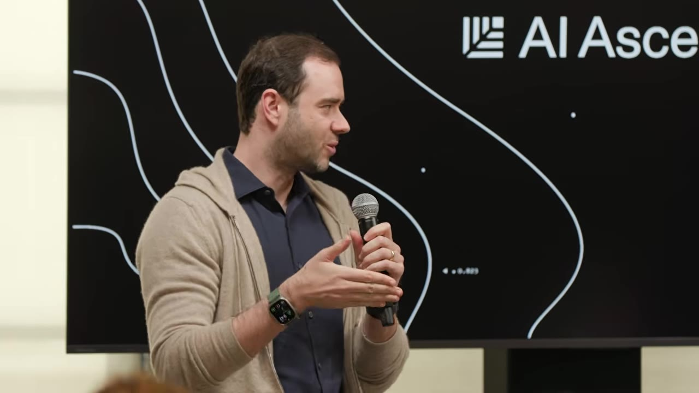
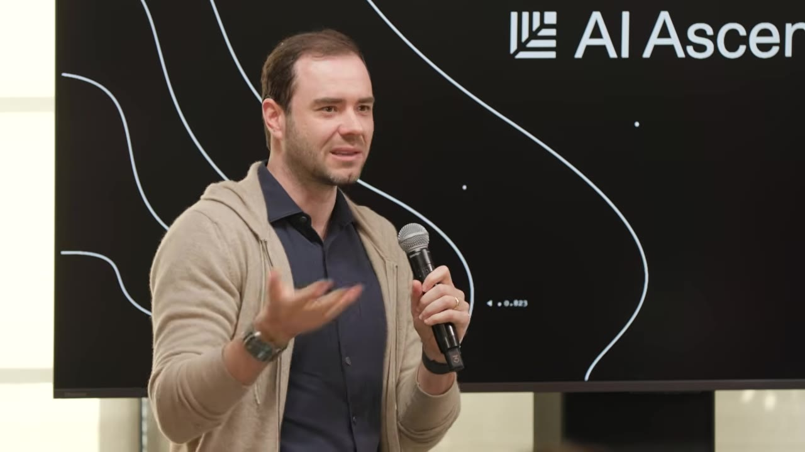
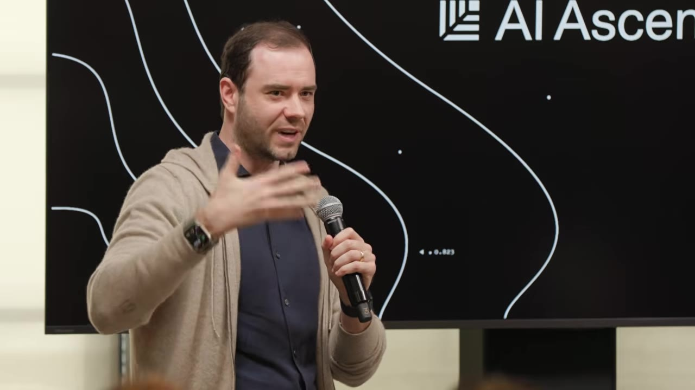
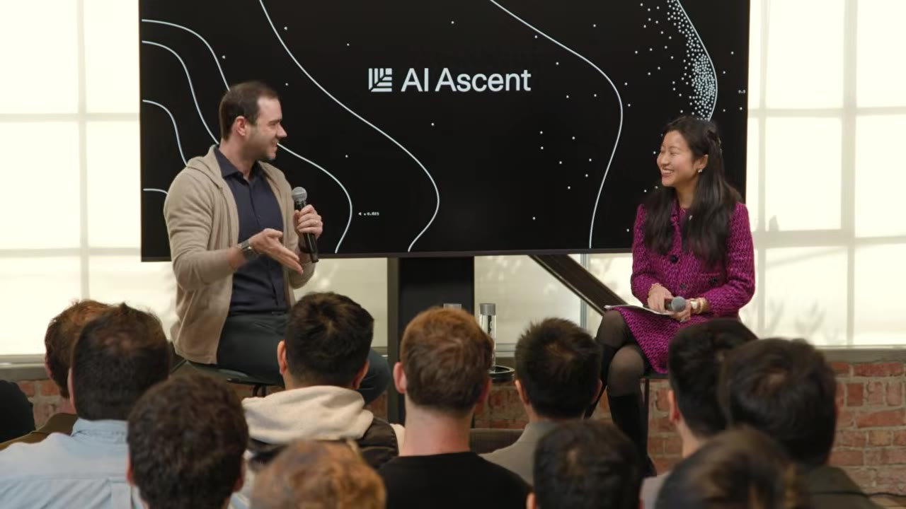
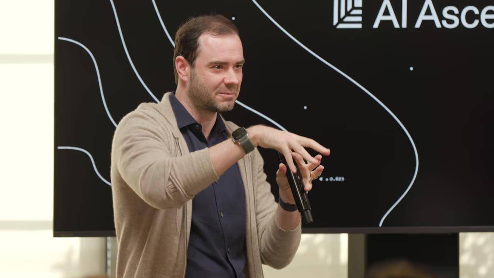
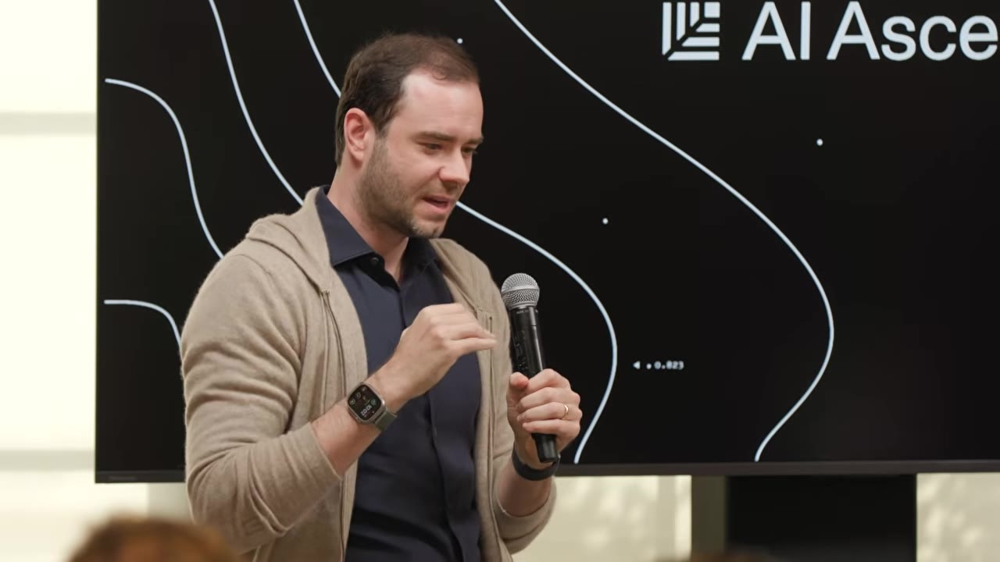
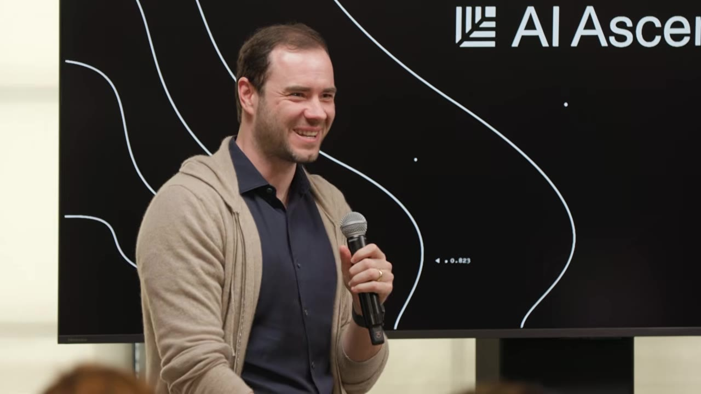
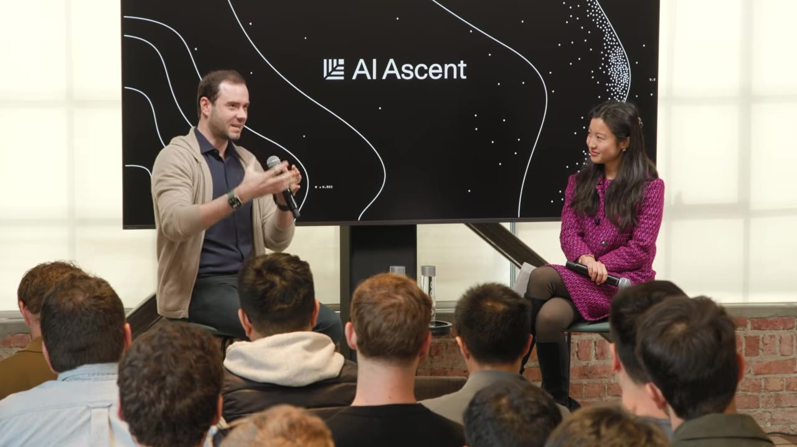

Karpathy explains why December was a step-change for coding agents, why the models are still 'jagged,' and what it means to do engineering when the agent fills in the blanks.
Watch on YouTubeFor about a year the agentic tools were helpful in pieces — good at chunks of code, occasionally wrong, something you'd edit and move on. December was the clear point where that changed. Karpathy was on a break with more time, started asking the latest models for more, and the chunks just kept coming out fine until he couldn't remember the last time he'd corrected one.

I think a lot of people experienced AI last year as a ChatGPT-adjacent thing, but you really had to look again as of December, because things have changed fundamentally.— Andrej Karpathy
Software 1.0 is code you write. Software 2.0 is programming by curating datasets and training a neural net. Software 3.0 is what happens once you've trained a GPT on enough of the internet that it becomes a programmable computer in its own right — your programming turns into prompting, and the context window is the lever over the interpreter.

The sharper example is MenuGen, his app that OCRs a restaurant menu and generates a picture for each dish. He built the whole pipeline — upload, OCR, image generation, re-render — and then saw the software 3.0 version: hand the photo to Gemini, ask Nano Banana to overlay the dishes onto the menu, and it returns the menu image with the pictures rendered straight into the pixels.
Push it further and the picture gets weird. Imagine a device that takes raw video or audio into a neural net and uses diffusion to render a UI unique to that moment.

You could imagine the neural net becomes the host process, and the CPUs become the co-processor — tool use as just a historical appendage for some deterministic tasks.— Andrej Karpathy
Karpathy is careful to flag this as TBD — something extremely foreign as the endpoint, gotten to piece by piece, not a clean prediction.
Traditional computers automate what you can specify in code; this round of LLMs automates what you can verify. Frontier models are trained as giant RL environments with verification rewards, so they end up as jagged entities — peaking in verifiable domains like math and code, rougher everywhere else.

How is it possible that a state-of-the-art model will simultaneously refactor a 100,000-line code base or find zero-day vulnerabilities, and yet tells me to walk to a car wash 50 meters away to wash my car? This is insane.— Andrej Karpathy
It's not just verifiability — it's also what the labs put in the mix. Chess jumped from GPT-3.5 to GPT-4 not as a general capability gain but because a large amount of chess data made it into pre-training. You're slightly at the mercy of what they happen to include: if you're in the circuits that were part of the RL, you fly; if you're outside them, you struggle, and you may have to do your own fine-tuning.
Vibe coding raises the floor — everyone can build software now, which is incredible. Agentic engineering is the other thing: preserving the quality bar that professional software always had. You're not allowed to introduce vulnerabilities because you vibe coded; you're still responsible for the software, just faster.

People used to talk about the 10x engineer. People who are very good at this peak a lot more than 10x.— Andrej Karpathy
He'd also rewrite hiring around it. Stop handing out puzzles — that's the old paradigm. Give someone a big project (build a secure Twitter clone for agents, simulate activity on it), then turn ten high-effort agents loose trying to break it. Watch how they handle the real thing.
Right now the agents are catalog-like internal entities; you stay in charge of aesthetics, judgment, taste, and oversight. His favorite cautionary example: in MenuGen, the agent tried to cross-correlate Stripe and Google email addresses to attach purchased credits to a user — instead of a persistent user ID. Use different emails and the funds wouldn't associate.

the spec, the design, the taste, and the call that everything ties to a unique user ID
the API details — keepdim vs keepdims, dim vs axis, reshape vs permute, the things with good recall
the code can give you a heart attack — bloated, copy-pasted, brittle abstractions; it works but it's gross
Does taste matter less over time? Maybe, but the reason it doesn't improve now is that aesthetics aren't in the RL — no reward for it. His microGPT project, trying to make LLM training as simple as possible, is the counter-case: the models hate it, they can't simplify, and prompting harder feels like pulling teeth outside the RL circuits.
We're not building animals; we're summoning ghosts — jagged intelligences shaped by data and reward functions, not by evolution's intrinsic motivation, curiosity, or fun. Karpathy is upfront that this is partly philosophizing.

The substrate is pre-training — statistics — with RL bolted on top. The useful stance that falls out is less a five-step playbook and more a habit of being suspicious of them, building a good model of what they are and aren't, and figuring it out over time. And on agent-native infrastructure: his pet peeve is docs written for humans ("why are people still telling me what to do — what's the thing I should copy-paste to my agent?"). The real test for MenuGen would be giving a prompt that builds and deploys it without him touching a single Vercel setting or DNS menu.
The closing thought came from a tweet he keeps returning to: you can outsource your thinking, but you can't outsource your understanding.

Something still has to direct the thinking and the processing, and that's fundamentally constrained by understanding.— Andrej Karpathy
This is why he's drawn to LLM-built knowledge bases: a new projection onto information he's already read, a way to actually get it into his head. The LLMs don't excel at understanding, so for now the human is still uniquely in charge of it — and he's curious whether, in a couple of years, that's been automated too.